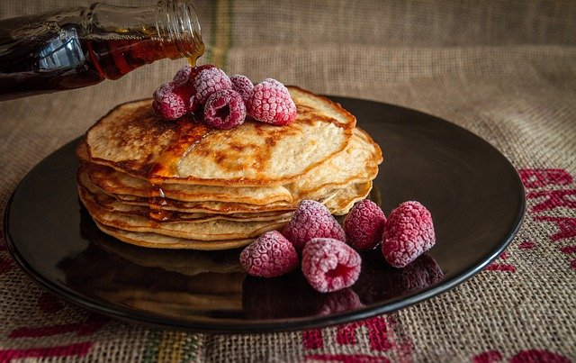

<!DOCTYPE html>
<html lang="en">

<head>
    <meta charset="UTF-8">
    <meta http-equiv="X-UA-Compatible" content="IE=edge">
    <meta name="viewport" content="width=device-width, initial-scale=1.0">
    <title>title</title>
    <style>
        .wrap {
            font-size: 0px;
            display: flex;
        }

        .card {
            box-sizing: border-box;
            padding: 0 5px;
            /* margin-right:1px; */
            width: 25%;
            /* display: inline-block; */
            /* margin-right: 1px; */
        }

        .img-wrap img {
            width: 100%;
            height: 200px;
            object-fit: cover;
        }

        h3 {
            font-size: 20px;
        }

        p {
            font-size: 16px;
        }

        span {
            color: pink;
        }
    </style>
</head>

<body>
    <div id="root"></div>

    <script>
        // https://www.elle.com/tw/life/foodie/g34624793/10taipei-pancake-recommend/

        const root = document.querySelector('#root')

        const img1 = `https://hips.hearstapps.com/hmg-prod.s3.amazonaws.com/images/%E6%98%9F%E4%B9%83%E7%8F%88%E7%90%B2%E5%BA%97-3-1605004302.jpg?crop=1xw:1xh;center,top&resize=980:*`

        const shop1 = `杏桃鬆餅屋`

        const detail1 = `完美復刻日本昭和年代的「星乃珈琲店HOSHINO COFFEE」，招牌「窯烤舒芙蕾熱蛋糕」，更被封為舒芙蕾控此生必吃的經典，熱熱的蛋糕體放上鮮奶油，Q彈之中每一口都是天然的濃濃奶香`

        const myObj =
        {
            shop1: {
                img: 'https://hips.hearstapps.com/hmg-prod.s3.amazonaws.com/images/%E6%98%9F%E4%B9%83%E7%8F%88%E7%90%B2%E5%BA%97-3-1605004302.jpg?crop=1xw:1xh;center,top&resize=980:*',
                shopname: '杏桃鬆餅屋',
                detail: '完美復刻日本昭和年代的「星乃珈琲店HOSHINO COFFEE」，招牌「窯烤舒芙蕾熱蛋糕」，更被封為舒芙蕾控此生必吃的經典，熱熱的蛋糕體放上鮮奶油，Q彈之中每一口都是天然的濃濃奶香'
            },
            shop2: { img: 'https://hips.hearstapps.com/hmg-prod.s3.amazonaws.com/images/%E8%8A%99%E7%A8%BB%E8%8F%93%E5%AE%A4-fu-dau-pastry-studio-%EF%BC%91-1605004733.jpg?crop=1xw:1xh;center,top&resize=768:*', shopname: '芙稻菓室 Fú Dàu Pastry Studio', detail: '店名取自「福到」諧音的芙稻菓室，老闆希望用甜點來回饋原產地生產者的辛勞，有別於其他咖啡廳，店內的舒芙蕾鬆餅選用純米穀粉製作而成，一口咬下蓬鬆柔軟的原味舒芙蕾鬆餅，濕潤綿密中還品嚐的到淡淡米香，簡單的甜點維繫著老闆與消費者，對腳下土地的美好祝願！' }
        }


        root.innerHTML = `
        <div class="wrap">
            <div class="card">
                <div class="img-wrap">
                    
                </div>
                <h3>${myObj.shop1.shopname}</h3>
                <p>${myObj.shop1.detail}</p>
            </div>
            <div class="card">
                <div class="img-wrap">
                    
                </div>
                <h3>${myObj.shop2.shopname}</h3>
                <p>${myObj.shop2.detail}</p>
            </div>
            <div class="card">
                <div class="img-wrap">
                    
                </div>
                <h3>莓果鬆餅</h3>
                <p>戶外<span>下午茶最值得推薦的點心</span> ，充滿奶香的鬆餅加上酸甜莓果，大人小孩看了都心動，若再配上咖啡跟美景就更完美。</p>
            </div>

        <div class="card">
            <div class="img-wrap">
                
            </div>
            <h3>莓果鬆餅</h3>
            <p>戶外<span>下午茶最值得推薦的點心</span> ，充滿奶香的鬆餅加上酸甜莓果，大人小孩看了都心動，若再配上咖啡跟美景就更完美。</p>
        </div>
    </div>`;
    </script>
</body>

</html>